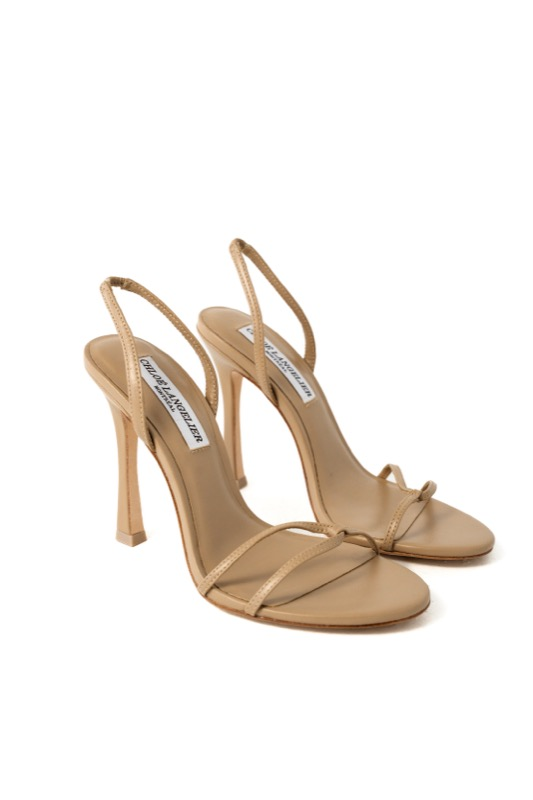
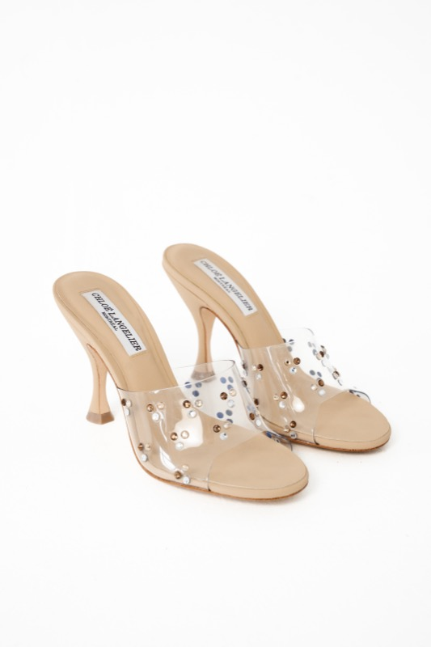
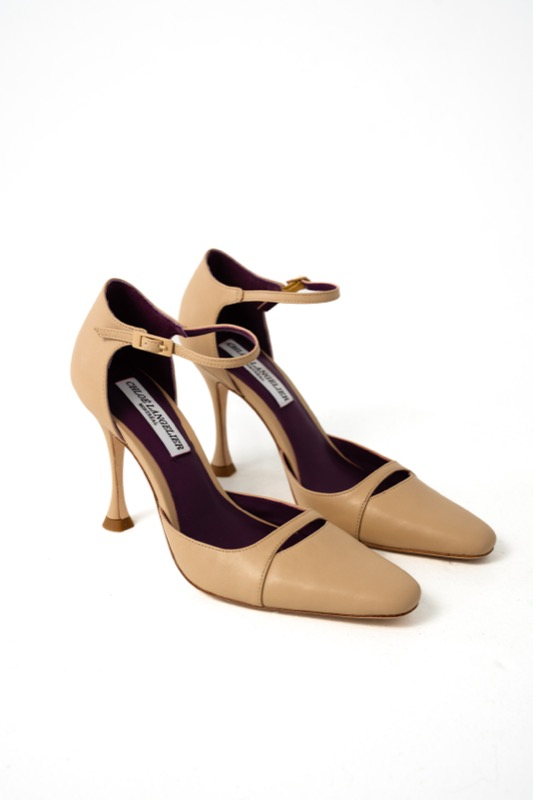
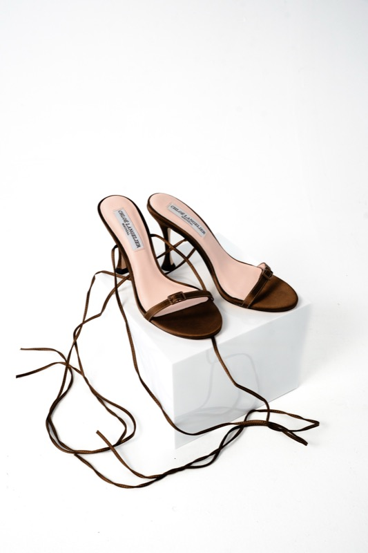
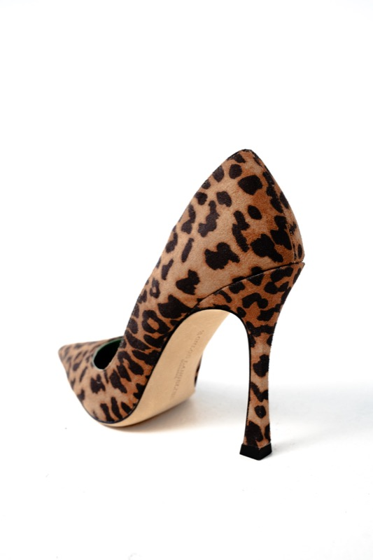
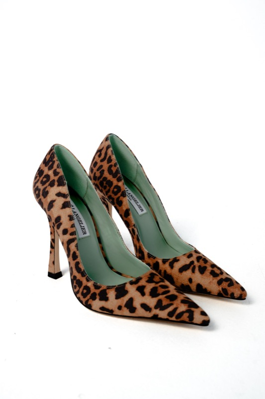
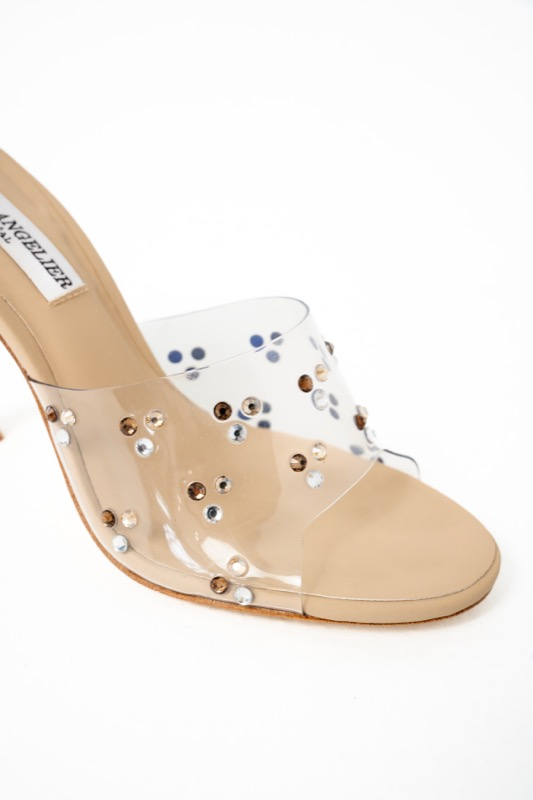
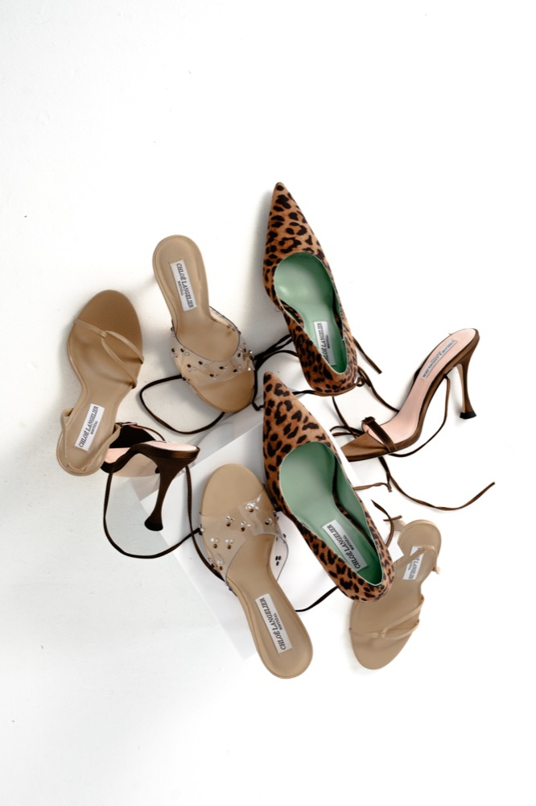

Digital Board Book™
Board Book Numérique™
Bank of Nova Scotia — Montreal, Quebec
Banque de la Nouvelle-Écosse — Montréal, Québec
The attainable luxury footwear segment (CAD $200–350) is the fastest-growing tier in North America. Consumers aged 25–40 are rejecting both fast-fashion quality compromises and $1,000+ designer markups. They seek intention, proportion, and emotional value at fair prices.
Le segment de la chaussure de luxe accessible (200–350 $ CA) est le plus rapide à croître en Amérique du Nord. Les consommateurs de 25 à 40 ans rejettent à la fois les compromis de qualité de la mode rapide et les majorations des designers à plus de 1 000 $. Ils recherchent l'intention, la proportion et la valeur émotionnelle à des prix justes.
Competitive White Space: Legacy houses (Jimmy Choo, Manolo Blahnik, Tom Ford) now price CAD $1,000–1,800. Fast fashion delivers poor construction at under CAD $100. Chloe Langelier occupies the precise middle — refined design, verified quality, honest pricing.
Espace blanc concurrentiel : Les maisons historiques (Jimmy Choo, Manolo Blahnik, Tom Ford) facturent maintenant 1 000–1 800 $ CA. La mode rapide offre une construction médiocre à moins de 100 $ CA. Chloe Langelier occupe le milieu précis — design raffiné, qualité vérifiée, prix honnêtes.
Chloe Langelier Inc. is a Quebec-incorporated company headquartered in Montreal. Production is executed through an established manufacturing partner in China. The brand launches with its first Curated Edition featuring five core silhouettes.
Founder & Creative Director — Chloe Anassis
Age 30 • Montreal, Quebec
Chloe's professional career at Turner & Townsend — one of the world's leading international project management and consulting firms, now part of CBRE, the global leader in commercial real estate services — is defined by a consistent pattern: she is promoted every time, and the scope of her responsibility expands with each advancement.
She joined the firm following graduation and was recognized immediately for her analytical precision, technical competence, and disciplined approach to complex assignments. Her managers entrusted her with progressively larger and more technically demanding capital programs — not because she asked for them, but because she delivered results on every project she touched.
Notable assignments include:
Her performance on these programs — consistently delivering on time, on budget, and with the level of documentation and rigor that billion-dollar capital projects demand — created an opportunity. Turner & Townsend promoted her again, relocated her to their headquarters operation, and increased her compensation from C$86,000 to C$120,000 plus benefits — a 39% salary increase that reflects the value the organization places on retaining her.
She is at peak earning power. She is building this company from a position of professional strength, not financial necessity.
Chloe did not discover entrepreneurship in a business school case study. She grew up inside it. She comes from a multi-generational entrepreneurial family — her father founded approximately thirteen companies across airline operations, VIP luxury jet services, humanitarian airlift, oil and gas logistics, and aircraft sales. The family enterprise spans decades of operating across Afghanistan, the Middle East, Africa, Northern Canada, and East Africa, with a historical hub in Nairobi, Kenya.
From childhood, Chloe absorbed what cannot be taught: how to read a business situation, how to manage risk under uncertainty, how to build organizations that survive in hostile environments, and how to lead people through ambiguity. Entrepreneurship is not a career choice she arrived at — it is the operating system she was raised on.
This combination — Fortune 500-grade project management discipline learned at Turner & Townsend, multi-generational entrepreneurial instinct inherited from the Anassis family enterprise, and an innate design sensibility cultivated through a lifetime of obsession with luxury footwear — produces a founder profile that a credit committee rarely encounters. She is not a creative person who hopes a business will work. She is a disciplined operator who has chosen creativity as the domain for her next venture.
Chloe Langelier Inc. est une société constituée au Québec dont le siège social est à Montréal. La production est réalisée par l'intermédiaire d'un partenaire manufacturier établi en Chine. La marque lance sa première Curated Edition avec cinq silhouettes principales.
Fondatrice et Directrice Créative — Chloe Anassis
30 ans • Montréal, Québec
La carrière professionnelle de Chloe chez Turner & Townsend — l'une des principales sociétés internationales de gestion de projets et de conseil, maintenant partie de CBRE, le leader mondial des services immobiliers commerciaux — est définie par un schéma constant : elle est promue à chaque étape, et la portée de ses responsabilités s'élargit à chaque avancement.
Elle a rejoint la firme après ses études et a été rapidement reconnue pour sa précision analytique, sa compétence technique et son approche disciplinée des mandats complexes. Ses gestionnaires lui ont confié des programmes de capital de plus en plus importants et techniquement exigeants — non pas parce qu'elle les a demandés, mais parce qu'elle a livré des résultats sur chaque projet qu'elle a touché.
Affectations notables :
Sa performance sur ces programmes a créé une opportunité. Turner & Townsend l'a de nouveau promue, l'a transférée à leur siège social et a augmenté sa rémunération de 86 000 $ CA à 120 000 $ CA plus avantages — une augmentation de salaire de 39 % qui reflète la valeur que l'organisation accorde à sa rétention.
Elle est au sommet de sa puissance de gains. Elle construit cette entreprise depuis une position de force professionnelle, non de nécessité financière.
Chloe n'a pas découvert l'entrepreneuriat dans une étude de cas d'école de commerce. Elle a grandi à l'intérieur. Elle provient d'une famille entrepreneuriale multigénérationnelle — son père a fondé environ treize entreprises à travers les opérations de compagnies aériennes, les services de jets de luxe VIP, le pont aérien humanitaire, la logistique pétrolière et gazière, et la vente d'aéronefs.
Dès l'enfance, Chloe a absorbé ce qui ne peut pas s'enseigner : comment lire une situation commerciale, comment gérer le risque dans l'incertitude, comment bâtir des organisations qui survivent dans des environnements hostiles, et comment diriger des personnes à travers l'ambiguïté.
Cette combinaison — la discipline de gestion de projets de calibre Fortune 500 apprise chez Turner & Townsend, l'instinct entrepreneurial multigénérationnel hérité de l'entreprise familiale Anassis, et une sensibilité de design innée cultivée par une vie d'obsession pour la chaussure de luxe — produit un profil de fondatrice qu'un comité de crédit rencontre rarement.
Chloe Langelier was founded on the belief that exceptional taste is the non-negotiable starting point for any luxury brand. The founder has spent years developing an instinctive understanding of proportion, material, and emotional resonance. This is not learned in a classroom; it is cultivated through a lifetime of observation, curation, and refinement.
Every silhouette in Curated Edition No. 01 was designed by Chloe herself. Each heel height, each curve of the last, each choice of material and finish was evaluated against a single standard: would a discerning woman choose to wear this shoe for the most important moments of her life?
Chloe Langelier a été fondée sur la conviction que le goût exceptionnel est le point de départ non négociable de toute marque de luxe. La fondatrice a passé des années à développer une compréhension instinctive de la proportion, du matériau et de la résonance émotionnelle. Cela ne s'apprend pas en classe ; cela se cultive à travers une vie d'observation, de curation et de raffinement.
Chaque silhouette de l'Curated Edition n° 01 a été conçue par Chloe elle-même. Chaque hauteur de talon, chaque courbe de la forme, chaque choix de matériau et de finition a été évalué selon un seul standard : une femme exigeante choisirait-elle de porter cette chaussure pour les moments les plus importants de sa vie ?

Chloe began with a single, first-principles question:
Everything that followed — small-batch production, Curated Editions™, Shopify, boutique validation, direct customer ownership, disciplined working capital, and continuous customer learning — emerged from answering that single question.
The company is not attempting to reinvent footwear. It is redesigning the operating model behind a modern luxury footwear company.
Chloe a commencé par une seule question de premiers principes :
Tout ce qui a suivi — production en petits lots, Curated Editions™, Shopify, validation en boutique, propriété directe du client, gestion disciplinée du capital de roulement et apprentissage continu du client — est né de la réponse à cette seule question.
L'entreprise n'essaie pas de réinventer la chaussure. Elle redessine le modèle opérationnel derrière une entreprise moderne de chaussures de luxe.
Never reversed. Technology exists only to strengthen execution. The product remains the hero.
Jamais inversé. La technologie existe seulement pour renforcer l'exécution. Le produit reste le héros.
The answer is not that Chloe comes from the footwear industry.
It is that she approached the industry the same way she approaches every complex business problem — with disciplined analysis, structured execution, and a relentless focus on improving existing models.
Although Chloe had long possessed a passion for fashion, design, and luxury footwear, she did not enter the industry assuming she had all the answers. Instead, she began by studying how successful footwear companies actually operate.
She researched manufacturing partners globally and ultimately established relationships with experienced manufacturers in China responsible for producing footwear for internationally recognized brands. Rather than attempting to build manufacturing capability herself, she deliberately partnered with organizations that had already demonstrated consistent quality, technical expertise, and production reliability.
Having established a proven manufacturing foundation, Chloe turned her attention to the business model itself.
She asked a simple but powerful question:
That question became the foundation of Chloe Langelier Inc.
Drawing upon a lifetime of exposure to entrepreneurship, a professional career managing highly complex capital projects, and formal training in business and financial disciplines, Chloe examined the traditional footwear industry from first principles.
Rather than accepting these practices as inevitable, Chloe designed a business model intended to reduce many of these inefficiencies.
The company deliberately combines small-batch production, Curated Editions™, selective boutique partnerships, direct-to-consumer commerce, disciplined working-capital management, and continuous customer learning to create a faster, more responsive operating model.
It would be reasonable to ask what managing billion-dollar capital programs has to do with luxury footwear. The answer is: everything.
The skills that Chloe refined at Turner & Townsend — vendor qualification, production scheduling, quality assurance protocols, cost control under tight margins, and the ability to coordinate multidisciplinary teams across time zones and languages — are the exact same skills required to run a disciplined manufacturing operation in China, launch timed Curated Editions every 45 days, and maintain the financial control that makes a CAD $25,000 revolving facility sufficient where competitors would need ten times that amount.
Most fashion founders learn these skills through expensive mistakes. Chloe arrived with them already embedded.
Those experiences fundamentally shaped the way Chloe approaches entrepreneurship.
She does not view the company as a fashion experiment. She views it as a carefully designed operating business built around disciplined execution, measured growth, continuous learning, and responsible capital allocation.
The objective is not simply to manufacture and sell shoes. The objective is to build an enduring Canadian luxury brand supported by thoughtful design, operational excellence, financial discipline, and a business model that becomes stronger with every product release.
La réponse n'est pas que Chloe vient de l'industrie de la chaussure.
C'est qu'elle a abordé l'industrie de la même manière qu'elle aborde chaque problème commercial complexe — avec une analyse disciplinée, une exécution structurée et une concentration implacable sur l'amélioration des modèles existants.
Bien que Chloe ait longtemps eu une passion pour la mode, le design et les chaussures de luxe, elle n'est pas entrée dans l'industrie en supposant qu'elle avait toutes les réponses. Au lieu de cela, elle a commencé par étudier comment les entreprises de chaussures réussies fonctionnent réellement.
Elle a recherché des partenaires de fabrication à l'échelle mondiale et a finalement établi des relations avec des fabricants expérimentés en Chine responsables de la production de chaussures pour des marques internationalement reconnues. Plutôt que d'essayer de construire elle-même une capacité de fabrication, elle s'est délibérément associée à des organisations qui avaient déjà démontré une qualité constante, une expertise technique et une fiabilité de production.
Ayant établi une base de fabrication éprouvée, Chloe a tourné son attention vers le modèle commercial lui-même.
Elle a posé une question simple mais puissante :
Cette question est devenue le fondement de Chloe Langelier Inc.
S'appuyant sur une vie d'exposition à l'entrepreneuriat, une carrière professionnelle gérant des projets de capital hautement complexes et une formation formelle en affaires et disciplines financières, Chloe a examiné l'industrie traditionnelle de la chaussure à partir des premiers principes.
Plutôt que d'accepter ces pratiques comme inévitables, Chloe a conçu un modèle commercial destiné à réduire bon nombre de ces inefficacités.
L'entreprise combine délibérément la production en petits lots, les Curated Editions™, des partenariats de boutique sélectifs, le commerce direct au consommateur, une gestion disciplinée du capital de roulement et un apprentissage continu du client pour créer un modèle opérationnel plus rapide et plus réactif.
Tout aussi important, Chloe apporte une expérience professionnelle qui s'étend bien au-delà de l'industrie de la mode. Après ses études, elle a rejoint Turner & Townsend, l'une des principales sociétés internationales de gestion de projets et de conseil au monde, maintenant partie de CBRE, le leader mondial des services immobiliers commerciaux. Au cours de sa carrière, Chloe a été reconnue très tôt pour ses capacités analytiques, sa compétence technique et son approche disciplinée des projets complexes, et s'est vu confier des missions de plus en plus importantes et techniquement exigeantes soutenant des programmes de capital majeurs dans de multiples industries.
Son expérience comprend la participation à des développements de centres de données à grande échelle, des institutions financières et des installations de fabrication avancées, impliquant des valeurs de projet allant de centaines de millions à plusieurs milliards de dollars. Plus récemment, elle a contribué à la planification de faisabilité d'une initiative majeure de centre de données pour Tourmaline Oil Corp., l'une des plus grandes sociétés énergétiques canadiennes, travaillant aux côtés d'équipes multidisciplinaires supérieures responsables de l'évaluation de décisions d'investissement techniques et commerciales hautement complexes.
Ces expériences ont fondamentalement façonné la façon dont Chloe aborde l'entrepreneuriat.
Elle ne considère pas l'entreprise comme une expérience de mode. Elle la considère comme une entreprise opérationnelle soigneusement conçue construite autour d'une exécution disciplinée, d'une croissance mesurée, d'un apprentissage continu et d'une allocation responsable du capital.
L'objectif n'est pas simplement de fabriquer et de vendre des chaussures. L'objectif est de construire une marque de luxe canadienne durable soutenue par un design réfléchi, l'excellence opérationnelle, la discipline financière et un modèle commercial qui devient plus fort à chaque lancement de produit.
Five foundational silhouettes, each with distinct personality and proven wearability. All produced in high-quality faux leather, satin, and textured finishes with reinforced shanks, memory-foam insoles, and precision construction.
Cinq silhouettes fondamentales, chacune avec une personnalité distincte et une portabilité éprouvée. Toutes produites en cuir synthétique de haute qualité, satin et finitions texturées avec tiges renforcées, semelles à mémoire de forme et construction de précision.







Design Philosophy: Every shoe begins with restraint. The intention is not to invent endlessly but to perfect what already works. Each silhouette must flatter the leg, maintain balance, and photograph beautifully from every angle.
Philosophie de design : Chaque chaussure commence par la retenue. L'intention n'est pas d'inventer sans fin mais de perfectionner ce qui fonctionne déjà. Chaque silhouette doit flatter la jambe, maintenir l'équilibre et photographier magnifiquement sous tous les angles.
All production is executed through an established manufacturing partner in China. This relationship was validated through the successful creation of Chloe's own wedding shoes — a proof-of-concept for both craftsmanship and durability. Following that success, Chloe negotiated improved production pricing and refined detailing.
Toute la production est exécutée par l'intermédiaire d'un partenaire manufacturier établi en Chine. Cette relation a été validée par la création réussie des chaussures de mariage de Chloe — une preuve de concept pour l'artisanat et la durabilité. Suite à ce succès, Chloe a négocié un meilleur prix de production et un raffinement des détails.
1. Pattern Cutting — Laser-cut for consistency with digital nesting to reduce waste.
2. Stitching & Assembly — Hand-stitched in small batches for line accuracy.
3. Lasting — Controlled heat application around precision lasts.
4. Sole Attachment — Thermal bonding + manual pressing with double-nail reinforcement.
5. Finishing — Individual polishing, cleaning, and inspection for every pair.
1. Découpe de patron — Découpé au laser pour la cohérence avec la conception numérique. 2. Upper Stitching — Couture de précision par des artisans expérimentés. 3. Lasting & Molding — Formé sur des moules pour la structure. 4. Outsole Attachment — Semelle collée et pressée. 5. Finishing — Inspection, nettoyage et emballage manuel.
Random pairs from each batch undergo flex testing (30,000 cycles), abrasion testing, adhesion pull-testing, and colorfastness testing. Only pairs that pass all criteria move to packaging. Small-batch production allows for tighter quality control than mass-production environments — every pair is inspected, not sampled.
Des paires aléatoires de chaque lot subissent des tests de flexion (30 000 cycles), des tests d'abrasion, des tests d'arrachement et des tests de solidité des couleurs. Seules les paires qui passent tous les tests sont expédiées.
The Curated Edition Financial Cycle™ is the engine that makes the entire model self-funding. Each 45-day release cycle is designed to convert inventory into cash before the next production cycle begins.
Because each Curated Edition is limited to 500 pairs and priced for rapid sell-through, the business generates the cash required for the next cycle before the next cycle begins. This is the discipline that makes the model work.
This blended margin provides room for marketing investment, selective markdowns, returns, fulfillment variation, and continued reinvestment while still preserving attractive product economics.
Using blended average selling price CAD $247.50 (80% DTC at $275 + 20% wholesale at $137.50), landed cost CAD $67/pair, total inventory cost CAD $33,500 (500 pairs)
| Sell-Through | Pairs Sold | Revenue | Gross Profit | Remaining |
|---|---|---|---|---|
| 70% | 350 | CAD $86,625 | CAD $63,175 | 150 pairs unsold |
| 85% | 425 | CAD $105,187.50 | CAD $76,712.50 | 75 pairs unsold |
| 100% | 500 | CAD $123,750 | CAD $90,250 | 0 pairs unsold |
A new Curated Edition™ enters development approximately every 14 days. Multiple future editions may be in design, sampling, production planning, or supplier coordination simultaneously.
Completed Curated Editions™ are introduced approximately every 60 days. This gives time to manufacture properly, build anticipation, prepare content, coordinate boutiques, launch, measure sell-through, and apply lessons.
We do not measure success by the number of shoes we produce. We measure success by how efficiently each Curated Edition™ converts creativity into customer demand, customer demand into cash flow, and cash flow into the next Curated Edition™.
Le Cycle Financier des Curated Editions™ est le moteur qui rend l'ensemble du modèle autofinancé. Chaque cycle de lancement de 45 jours est conçu pour convertir l'inventaire en espèces avant que le prochain cycle de production ne commence.
Parce que chaque Curated Edition est limitée à 500 paires et tarifée pour une vente rapide, l'entreprise génère les espèces requises pour le prochain cycle avant que le prochain cycle ne commence. C'est la discipline qui fait fonctionner le modèle.
The financial model below is built on conservative assumptions. Year 1 assumes 2,000 pairs produced across four Curated Editions (500 pairs per edition), with an 85% sell-through rate yielding 1,700 pairs sold at a blended average selling price of CAD $247.50 (DTC $275 + wholesale $137.50, 80/20 mix).
Le modèle financier ci-dessous est construit sur des hypothèses conservatrices. L'année 1 suppose 2 000 paires produites sur quatre Curated Editions (500 paires par édition), avec un taux de vente de 85 % donnant 1 700 paires vendues à un prix de vente moyen mixte de 247,50 $ CA (DTC 275 $ + gros 137,50 $, mixte 80/20).
| Year | Revenue | Gross Margin | Net Profit | Pairs Sold |
|---|---|---|---|---|
| 2026 | $420,750 | 73% | +$80,000 | 1,700 |
| 2027 | $1.12M | 63% | +$310,000 | 4,500 |
| 2028 | $2.35M | 65% | +$720,000 | 9,400 |
| 2029 | $3.68M | 66% | +$1.12M | 14,700 |
| 2030 | $5.26M | 67% | +$1.57M | 21,000 |
Tableau : Modèle financier 2026–2030.
Hypothèse clé : Quatre Curated Editions en Année 1 (500 paires chacune). À partir de l'Année 2, six Curated Editions par an.
| Purpose | Amount (CAD) |
|---|---|
| Final 50% production payment to manufacturing partner | $12,000 |
| International freight, shipping, duties & customs | $4,500 |
| Inventory receiving, fulfillment supplies & packaging | $1,500 |
| Initial marketing campaigns, content creation & influencer seeding | $3,000 |
| Working capital reserve for launch operations | $4,000 |
| Total | $25,000 |
Tableau : Affectation des fonds de la facilité renouvelable de 25 000 $ CA.
Founder has already invested approximately CAD $45,000 of personal capital into development, tooling, supplier audit trip to China, photography, equipment, and 50% production deposit. This facility bridges to launch only.
La fondatrice a déjà investi environ 45 000 $ CA de capital personnel dans le développement, l'outillage, les prototypes et la validation manufacturière.
| Risk Factor | Mitigation | Residual |
|---|---|---|
| Production quality or consistency | Proven wedding-shoe pilot; small-batch flexibility with established partner; rigorous QC protocols | Low |
| Sell-through below forecast | 500-pair editions; 85% conservative target; unsold pairs managed through archive sales & influencer gifting | Medium-Low |
| Tariff / duty exposure | Built into landed cost model (USD $35–50/pair inclusive); conservative assumptions maintained | Low |
| Founder time commitment | Full-time professional income (C$120k+) maintained independently | Very Low |
| Facility servicing capacity | Revolving facility designed to be drawn and repaid with each production cycle; multiple income sources | Very Low |
Tableau : Analyse des risques et stratégies d'atténuation.
Technology may improve decisions.
La technologie peut améliorer les décisions.
Only exceptional design creates desire.
Seul un design exceptionnel crée le désir.
The product remains the hero.
Everything else exists to support it.
Le produit reste le héros.
Tout le reste existe pour le soutenir.
While remaining attentive to seasonal preferences and market conditions, each release is evaluated on its own merits rather than being constrained by a rigid industry calendar.
Tout en restant attentive aux préférences saisonnières et aux conditions du marché, chaque lancement est évalué sur ses propres mérites plutôt que d'être contraint par un calendrier industriel rigide.
The brand's primary storefront. Full control over presentation, pricing, customer data, and messaging. Every Curated Edition launches here first, capturing the highest-margin DTC sales before any wholesale allocation.
Selective partnerships with 15–25 premium boutiques across Montreal and Toronto in Year 1, representing approximately 500 pairs in wholesale allocation. Boutiques receive inventory only after the direct-to-consumer launch window closes. This preserves brand control, creates perceived scarcity, and ensures that wholesale serves as a customer acquisition channel — not a dependency.
Chloe personally monitors Instagram, Pinterest, and emerging style platforms daily. This is not outsourced. The founder stays close to the customer.
Every purchaser is added to the VIP list. Early access, private previews, and personalized notes from the founder create emotional loyalty that competitors cannot replicate.
Every touchpoint described above — Shopify sales data, boutique sell-through reports, manufacturing partner status, customer survey responses, social media signals, and VIP community engagement — flows into a single, centralized intelligence layer called the Intelligence Atelier™.
This is not a dashboard that someone checks once a month. It is a proprietary operational nervous system, developed in-house by the Anassis Family Office as a highly proprietary internal system, that connects every digital aspect of the business in real time: manufacturing throughput in China, inventory position across 15–25 boutiques, DTC sales velocity on Shopify, customer feedback surveys, and return/quality signals — all visible in one place, all the time.
What this means in practice: Chloe knows within days — not seasons — which silhouettes are resonating, which boutiques are underperforming, whether a production batch has a quality issue, and which customers are ready for the next Curated Edition. She can adjust marketing spend, reallocate inventory, or flag a manufacturing concern before traditional brands would even have their first sales meeting.
This is the structural advantage that makes the 45-day cycle work. Without the Intelligence Atelier™, rapid cycles would create chaos. With it, every release produces compounding operational intelligence that makes the next release more precise.
La vitrine principale de la marque. Contrôle total sur la présentation, les prix, les données clients et la messagerie. Chaque Curated Edition est lancée ici en premier.
Partenariats sélectifs avec 15–25 boutiques premium à Montréal et Toronto en année 1, représentant environ 500 paires en allocation de gros. Les boutiques reçoivent l'inventaire seulement après la fenêtre de lancement direct au consommateur.
Chloe surveille personnellement Instagram, Pinterest et les plateformes de style émergentes quotidiennement.
Chaque acheteur est ajouté à la liste VIP. L'accès anticipé, les aperçus privés et les notes personnalisées de la fondatrice créent une loyauté émotionnelle.
Chaque point de contact décrit ci-dessus — données de vente Shopify, rapports d'écoulement en boutique, statut du partenaire manufacturier, réponses aux sondages clients, signaux des médias sociaux et engagement de la communauté VIP — converge vers une couche d'intelligence centralisée appelée Intelligence Atelier™.
Ce n'est pas un tableau de bord que quelqu'un consulte une fois par mois. C'est un système nerveux opérationnel propriétaire, développé à l'interne par le Anassis Family Office comme système interne hautement propriétaire, qui connecte chaque aspect numérique de l'entreprise en temps réel.
Ce que cela signifie en pratique : Chloe sait en quelques jours — non en saisons — quelles silhouettes résonnent, quelles boutiques sous-performent, si un lot de production a un problème de qualité et quels clients sont prêts pour la prochaine Curated Edition.
Most emerging footwear brands compete on aesthetics alone. Chloe Langelier competes on seven structural advantages that compound with every Curated Edition — and none of them can be acquired by simply spending more money.
La plupart des nouvelles marques de chaussures rivalisent sur l'esthétique seule. Chloe Langelier rivalise sur sept avantages structurels qui s'accumulent à chaque Curated Edition — et aucun ne peut être acquis en dépensant simplement plus d'argent.
The Curated Edition model is the strategic heart of the business. Each release is limited to 500 pairs, priced for rapid sell-through, and designed to create anticipation for the next Curated Edition.
Le modèle des Curated Editions est le cœur stratégique de l'entreprise. Chaque lancement est limité à 500 paires, tarifé pour une vente rapide et conçu pour créer l'anticipation du prochain lancement.
4 Curated Editions, 2,000 pairs, Shopify + 8–12 boutiques. Focus: prove the model.
4 Curated Editions, 2 000 paires, Shopify + 8–12 boutiques. Objectif : prouver le modèle.
6 Curated Editions, VIP program, expanded boutique network. Focus: deepen loyalty.
6 Curated Editions, programme VIP, réseau de boutiques élargi. Objectif : approfondir la fidélité.
National boutique presence, first pop-up experiences. Focus: geographic reach.
Présence nationale en boutique, premières expériences pop-up. Objectif : portée géographique.
Strategic department store partnerships, wholesale channel development. Focus: scale with control.
Partenariats stratégiques avec grands magasins, développement du canal de gros. Objectif : croissance contrôlée.
US market entry, European boutique partnerships, potential flagship. Focus: global brand building.
Entrée sur le marché américain, partenariats boutiques européennes, flagship potentiel. Objectif : construction de marque mondiale.
The Intelligence Atelier™ is the proprietary operational nervous system that connects every digital touchpoint of Chloe Langelier Inc. — from manufacturing throughput in China to Shopify sales velocity, boutique sell-through across Montreal and Toronto, customer survey responses, VIP community engagement, and quality return signals — into a single, real-time intelligence layer.
Developed in-house by the Anassis Family Office as a highly proprietary internal system, the Intelligence Atelier™ gives Chloe something her competitors do not have: the ability to see her entire operation — every pair produced, every pair sold, every customer comment, every production quality flag — in one place, updated continuously.
This is what makes the 45-day Curated Edition cycle viable. Without it, rapid releases would create operational chaos. With it, every edition produces compounding intelligence: which silhouettes resonate, which boutiques need support, which customers are ready for the next release, and where production needs adjustment — all visible before the next cycle begins.
Traditional luxury brands discover what worked nine months after it shipped. Chloe Langelier knows within days.
L'Intelligence Atelier™ est le système nerveux opérationnel propriétaire qui connecte chaque point de contact numérique de Chloe Langelier Inc. — du débit de fabrication en Chine à la vélocité des ventes Shopify, en passant par l'écoulement en boutique, les réponses aux sondages clients et les signaux de qualité — en une seule couche d'intelligence en temps réel.
Développé à l'interne par le Anassis Family Office comme système interne hautement propriétaire, l'Intelligence Atelier™ donne à Chloe quelque chose que ses concurrents n'ont pas : la capacité de voir toute son opération en un seul endroit, mise à jour en continu.
C'est ce qui rend le cycle de Curated Edition de 45 jours viable. Sans lui, les lancements rapides créeraient un chaos opérationnel. Avec lui, chaque édition produit une intelligence qui s'accumule.
| Advantage | How It Is Built |
|---|---|
| Founder Taste | Non-transferable. Cannot be copied. |
| 45-Day Learning Cycle | Traditional competitors operate on 9–12 month cycles. |
| Direct Customer Ownership | Shopify + VIP database. No wholesale dilution. |
| Proven Manufacturing Relationship | Validated through wedding-shoe pilot. Small-batch flexibility. |
| Self-Funding Model | Each edition funds the next. Low capital intensity. |
Tableau : Avantages concurrentiels et construction du fossé défensif.
The Dual Flywheel: Release → Learn → Refine → Release and Customer → Data → Product → Customer. Each turn of either flywheel strengthens the other.
Le Double Volant : Lancement → Apprendre → Raffiner → Lancement et Client → Données → Produit → Client. Chaque tour de l'un des volants renforce l'autre.
Chloe Langelier Inc. is building more than a footwear company. It is building a Canadian luxury brand that earns its place through taste, discipline, and continuous improvement.
The model is designed to strengthen with every release: revenue compounds, data deepens, confidence grows, and the relationship with the customer becomes more valuable.
Chloe Langelier Inc. ne construit pas seulement une entreprise de chaussures. Elle construit une marque de luxe canadienne qui gagne sa place par le goût, la discipline et l'amélioration continue.
Le modèle est conçu pour se renforcer à chaque lancement : les revenus s'accumulent, les données s'approfondissent, la confiance grandit et la relation avec le client devient plus précieuse.
Thank you for reviewing the Chloe Langelier Inc. Digital Board Book.
This document was prepared for Bank of Nova Scotia — June 2026.
Merci d'avoir consulté le Board Book Numérique de Chloe Langelier Inc.
Ce document a été préparé pour la Banque de la Nouvelle-Écosse — Juin 2026.